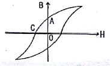
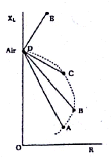

와전류비파괴검사기사(구) (2012-05-20 기출문제)
1과목: 와전류탐상시험원리
1. 어떤 재료에 주파수가 10kHz일 때 와전류 침투깊이가 3mm이었다. 다른 조건은 변화시키지 않고 단지 주파수만 5kHz로 변경하였다면 침투 깊이는 약 얼마가 되겠는가?
- 1.8mm
- 3.0mm
- 4.2mm
- 5.4mm
(정답률: 알수없음)

2. 다음 중 가장 작은 와류 침투 깊이를 갖는 주파수는?
- 1kHz
- 3kHz
- 10kHz
- 300kHz
(정답률: 알수없음)
3. 와전류 탐상시험시 시험체와 시험 코일과의 상대운동 때문에 생긴 기전력에 의하여 탐상신호에 변화를 주는 것을 무엇이라 하는가?
- Speed 효과
- Edge 효과
- Fail-off 효과
- Lift-off 효과
(정답률: 알수없음)
4. 반지름 3mm의 전선을 선간거리 30cm로 평행 가설한 길이 1km의 배전선에 60Hz의 교류가 흐를 때 임피던스는 얼마인가? (단, 진공의 유전율은 8.854×10-12F/m이다.)
- 2.65×10-3Ω
- 2.62×10-4Ω
- 4.39×105Ω
- 6.04×109Ω
(정답률: 알수없음)
5. 와전류 탐상시험에서 이론적인 최대 검사속도를 결정하는 인자는?
- 자속일도
- 이송장치 속도
- 검사 주파수
- 시험 코일 임피던스
(정답률: 알수없음)
6. 코일의 교류전압과 전류의 크기 및 위상의 관계는 무엇을 결정하게 되는가?
- 리액턴스
- 임피던스
- 리렉턴스
- 인덕턴스
(정답률: 알수없음)
7. 침투탐상시험에서 침투액에 요구되는 일반적인 성질 및 성능에 대한 설명으로 틀린 것은?
- 점성이 낮아야 한다.
- 건조 속도가 늦어야 한다.
- 인화점이 높고, 중성으로 부식성이 없어야 한다.
- 형광 휘도가 낮거나, 적색의 색상이 흐릿하게 나타나야 한다.
(정답률: 알수없음)
8. 초음파란 일반적으로 인간의 가청(可聽)주파수 이상의 주파수를 말한다. 다음 중 얼마 이상의 주파수를 일반적으로 초음파라 하는가?
- 20Hz 이상
- 20 MHz 이상
- 2 kHz 이상
- 20 kHz 이상
(정답률: 알수없음)
9. 다음 중 적심성 (Wetting Ability)의 측정방법은?
- 비중
- 밀도
- 접촉각
- 표면장력
(정답률: 알수없음)
10. 그림은 물질의 자기이력곡선이다. 좌표의 X축인 H는 무엇을 의미하는가?

- 투자율
- 전도도
- 자속밀도
- 자계의 세기
(정답률: 알수없음)
11. 비파괴검사법에서 제품의 도금 두께 및 거리와 형상의 변화를 판별하는데 가장 적절한 검사 방법은?
- 침투탐상검사
- 변형률 측정검사
- 와전류탐상검사
- 음향방출검사
(정답률: 알수없음)
12. 공업적으로는 널리 이용되지 않으나 의료 목적으로 많이 이용되는 방사선투과시험 방법은?
- 라미나그라피(laminagraphy)
- 고속 방사선투과시험(flash radiography)
- 전자 방사선투과시험(Electron radiography)
- 반사 미세방사선투과시험(Reflection micro radiography)
(정답률: 알수없음)
13. 와전류탐상검사에서 동일한 시험체의 두 부분을 서로 비교하는 코일의 배열 방법은?
- 상호 비교형
- 절대 비교형
- 단일 비교형
- 자기 비교형
(정답률: 알수없음)
14. 다음 중 방사선투과검사법의 종류가 아닌 것은?
- X-선 투과검사
- γ-선 투과검사
- 중성자 투과검사
- β-선 투과검사
(정답률: 알수없음)
15. 비파괴검사 방법 중 제품이나 부품의 전체적인 모니터링 방법에 사용되는 것은?
- 스트레인 측정
- 방사선투과검사
- 자부탐상검사
- 침투탐상검사
(정답률: 알수없음)
16. 누설검사에서 규정된 누설검출기에 의해서 감지할 수 있는 누설부위를 통과하는 가스는?
- 저장 가스
- 추적 가스
- 허위 가스
- 절대 가스
(정답률: 알수없음)
17. 다음 중 레이저(laser)가 필요한 비파괴검사법은?
- 입체 방사선투과검사(Stereo radiography)
- 자속누설검사(Magnetic flux leakage test)
- 스펙클 간섭법(speckle interferometry)
- 광섬유 보아 스코프(Fiber optic boresscope)
(정답률: 알수없음)
18. 물체가 변형할 때 그 물체의 표면에 부착시켜 놓은 소자의 변형에 의하여 전기적인 변화를 측정하므로 제품이나 부품의 전체적인 모니터링이 가능한 특수 비파괴검사법은?
- 전위차시험
- 스트레인측정시험
- 전자초음파공명시험
- 기체 방사성동위원소시험
(정답률: 알수없음)
19. 누설 시험에서 온도를 측정하는 온도계 중 비접촉식 온도계로 옳은 것은?
- 유리 온도계
- 방사 온도계
- 저항 온도계
- 열전대 온도계
(정답률: 알수없음)
20. 자분탐상검사를 수행할 경우 검사결과에 대한 신뢰성을 높이기 위한 방법이 아닌 것은?
- 교육 및 훈련을 받은 검사원이 검사를 수행한다.
- 숙련된 검사원이 검사결과로터의 지시모양을 판독한다.
- 간단한 검사장비 및 검사절차로 검사를 수행하도록 유도한다.
- 시험체에 존재하는 모든 균열을 검출할 수 있는 검사법으로 수행한다.
(정답률: 알수없음)
2과목: 와전류탐상검사
21. 다음 결함 중 체적을 갖는 결함은?
- 일계부식
- 축방향 균열
- 점식(Pitting)
- 응력부식 균열
(정답률: 알수없음)
22. 외경이 25mm인 환봉을 관통코일로 와전류 탐상시 충전율이 70%이었다. 이때 코일의 평균직경은 약 얼마인가?
- 25mm
- 30mm
- 35mm
- 40mm
(정답률: 알수없음)
23. 페인트로 칠해서 볼 수 없는 4개의 시험체에 Probe형 탐축자를 접촉시켰더니 그림 중 A, B, C 및 E와 같은 정규화된 임피던스 궤적을 확인하였다. 4개의 시험체 중 전도도가 가장 좋을 것으로 판단되는 것은?

- A
- B
- C
- E
(정답률: 알수없음)
24. 관의 외경이 0.75인치이고 관의 두께가 0.004인치인 인코넬 600관을 와전류 탐상검사를 하는데 사용된 Bobbin형 탐촉자의 외경이 18.3mm이었다. 이때 탐촉자의 충전율(fillfactor)은 약 얼마인가?
- 84%
- 87%
- 94%
- 97%
(정답률: 알수없음)
25. 크기와 모양은 같고 재질이 서로 다른 시험체를 와전류탐상 시험법으로 분류하고자 할 때 이용되는 성질은?
- 투자율의 차이
- 전기전도도의 차이
- 와전류의 방향 차이
- 와전류의 주파수 차이
(정답률: 알수없음)
26. 와전류를 이용한 균열검출기(crack detector)의 사용시 주파수 선정 기준으로 가장 적절한 것은?
- S/N비가 최소인 주파수의 선정
- 위상차가 180° 되는 주파수의 선정
- 속도효과가 최대가 되는 주파수의 선정
- 리프트-오프 효과가 최소인 주파수의 선정
(정답률: 알수없음)
27. 열교환기 배관의 와전류 탐상에서 S/N비를 향상시켜서 검사의 신뢰성을 높이는 방법은?
- 코일이 회전하는 탐상장치를 이용
- 내삽코일을 이용한 탐상장치를 이용
- 다중주파수를 이용한 탐상장치를 이용
- 복수형 코일을 이용한 탐상장치를 이용
(정답률: 알수없음)
28. 강재로 제작된 실린더에서 질화충의 두께 측정은 다음 중 어떤 값을 이용하는가?
- 투자율
- 자기포화
- 전도도
- 파형지연시간
(정답률: 알수없음)
29. 와전류 탐상장치에서 일반적으로 사용되는 판독장치가 아닌 것은?
- 미터기(meter)
- 전압계(voltmeter)
- 기록계(chart recorder)
- 음극선관(cathode ray tube)
(정답률: 알수없음)
30. 와전류 탐상시험시 동기검파기(또는 위상판별기)의 입력신호와 제어신호와의 위상치를 θ라 하면, 동기검파기의 출력신호는 다음 중 어는 것에 비례하는가?
- sinθ
- cosθ
- tanθ
- tan-1θ
(정답률: 알수없음)
31. 와전류탐상검사시 시험체에 의사지시가 발행한 원인으로 틀린 것은?
- 시험체의 롤 마크(roll mark)
- 시험체의 잔류 응력
- 시험체의 재질 불균일
- 시험체 표면의 응력 부식
(정답률: 알수없음)
32. 와전류탐상시험에서 임피던스 변화의 검출 방법에 의한 시험방법이 아닌 것은?
- 임피던스 시험
- 주파수 변조 시험
- 위상 분석 시험
- 변조 분석 시험
(정답률: 알수없음)
33. 다중주파수 와전류 탐상을 위한 코일의 선택방법으로 옳은 것은?
- 주파수 밴드폭이 가장 중요하다.
- 주파수 특성은 별로 중요하지 않다.
- 코일의 Q-인자는 적어도 1보다 작아야 한다.
- 코일의 Q-인자는 적어도 인덕턴스보다는 작아야 한다.
(정답률: 알수없음)
34. 관통코일에 의한 와전류 탐상시험에서 대비시험편을 90°씩 회전시켜 여러 번 시험을 반복하는 것은 무엇을 조정하기 위한 것인가?
- 감도
- 시험주파수
- 위상
- 코일의 위치
(정답률: 알수없음)
35. 와전류 검사주파수 선정시 고려사항 중 틀린 것은?
- 검출코자 하는 결함과 잡음과의 위상차는 90°가 되도록 한다.
- 신호 대 잡음(S/N)비를 고려한다.
- 와전류 침투깊이를 고려해서 주파수를 선정한다.
- 전도도가 큰 재질 일수록 높은 주파수를 선택한다.
(정답률: 알수없음)
36. 크롬으로 도금된 평판에서 도금의 균일성 여부를 확인하려고 할 때 가장 적합한 코일의 종류는?
- 보빈 코일
- 관통형 코일
- 표면 코일
- 내삽형 코일
(정답률: 알수없음)
37. 관의 와전류 탐상시험을 할 때 각종 전기기계의 기동, 정지에 따른 잡음을 없애는데 필요한 방법은?
- 동기 검파
- 이상기(shifter)
- 실드(shield)
- 리젝션(rejection)
(정답률: 알수없음)
38. RFEC(remote field eddy current) 시험법에서 remote field에 놓여진 센서에 영향을 미치는 인자로 가장 거리가 먼 것은?
- 기계적 잡음
- 투자율 변화
- 전기전도도 변화
- 날카로운 균열
(정답률: 알수없음)
39. 와전류 탐상검사에서 시험체 재질이나 형상의 작은 변화로 인한 영향을 최소화하기 위하여 사용되는 것은?
- 필터
- 브릿지
- 리젝션
- 동기검파기
(정답률: 알수없음)
40. 와전류 탐상검사에서 재현성이 없는 의사지시는?
- 꺽임
- 시험체의 타흔
- 외부 전기 노이즈
- 시험체의 롤 마크(roll mark)
(정답률: 알수없음)
3과목: 와전류탐상관련규격
41. 보일러 및 압력 용기에 대한 관 제품의 와전류탐상검사(ASME Sec. V Art.8)에서 시험장치가 제대로 작동되는지 대비 시험편으로 점검, 교정하는 시기로 적당하지 않은 경우는?
- 고장이 의심되는 시점마다
- 검사공정의 종료 시점
- 검사공정의 시작 시점
- 결함이 발견될 때마다
(정답률: 알수없음)
42. 강관의 와류탐상검사 방법(KS D 0251)에서 검사 결과의 기록 작성에 기재되어야 할 사항이 아닌 것은?
- 탐상기의 제조자 명
- 탐상 코일
- 탐상 주파수
- 검사 기술자
(정답률: 알수없음)
43. 강의 와류탐상 시험방법(KS D 0232)에 따른 와전류 탐상에서 시험결과의 기록사항에 해당되지 않는 것은?
- 시험체명
- 시험장치 제작자
- 대비 시험편의 종류 및 치수
- 시험 코일의 표시
(정답률: 알수없음)
44. 강관의 와류탐상검사 방법(KS D 0251)에 의해 검사할 때에 적어도 몇 시간마다 강도를 확인하여야 하는가?
- 1시간
- 4시간
- 8시간
- 16시간
(정답률: 알수없음)
45. 보일러 및 압력 용기에 대한 관 제품의 와전류탐상검사(ASME Sec. V Art.8)에서 규정한 대비시험편을 설명한 것으로 맞는 것은?
- 대비시험편의 재질은 시험할 재질과 동일한 것이어야 한다.
- 대비시험편의 재질은 시험할 재질과 유사한 것이어야 한다.
- 대비시험편의 재질은 시험할 재질과 동일한 조성이면 되며 제조방법은 달라도 된다.
- 대비시험편의 재질에 대해 규정하고 있지 않다.
(정답률: 알수없음)
46. 강관의 와류탐상검사 방법(KS D 0251)에서 규정한 대비시험편의 줄홈 요건으로 옳은 것은?
- 각도는 45°로 한다.
- 길이는 20mm이하로 한다.
- 깊이 허용차는 ±5%로 한다.
- 깊이 허용차의 최소 값은 0.1mm로 한다.
(정답률: 알수없음)
47. 강관의 와류탐상검사 방법(KS D 0251)에서 대비시험편의 인공홈의 가공방법으로 적당하지 않은 것은?
- 네모 홈은 기계 가공한다.
- 네모 홈은 관의 바깥면에 관의 원주방향으로 가공한다.
- 줄홈은 3각형 줄로 관의 원주 방향으로 가공한다.
- 네모 홈은 형상이 U자형으로 가공될 수 있다.
(정답률: 알수없음)
48. 동 및 동합금관의 와류탐상검사 방법(KS D 0214) 따른 와류탐상시험에서 자기포화장치가 필요한 시험체는?
- 이음매 없는 니켈 동 합금관
- 이음매 없는 동합금관
- 동합금 용접관
- 이음매 없는 동관
(정답률: 알수없음)
49. 동 및 동합금관의 와류탐상검사 방법(KS D 0214)에 따라 탐상시 결함에서의 신호와 동등 이상의 신호가 검출되었다. 이 시험편의 합부판정에 대한 설명으로 틀린 것은?
- 육안검사를 통해 해로움이 없다고 판단되면 합격처리할 수 있다.
- 재시험을 통해 결함여부를 판정한다.
- 명확한 판정이 어려운 경우 반드시 불합격처리한다.
- 신호의 발생상황에 따라 결함이 아닌 경우 합격으로 하여도 좋다.
(정답률: 알수없음)
50. 강의 와류탐상 시험방법(KS D 0232)에서 규정한 지정사항에 반드시 포함되는 내용과 거리가 먼 것은?
- 대비시험편
- 시험체의 표면 상황
- 시험장치 및 시험코일
- 시험순서 등의 시험조건
(정답률: 알수없음)
51. 보일러 및 압력 용기에 대한 관 제품의 와전류탐상검사(ASME Sec. V Art.8)에 따라 24인치/sec의 탐상속도로 황동관을 와류탐상시험을 할 때 옳은 것은?
- 최대허용 탐상속도는 25인치/sec이므로 탐상속도는 문제되지 않는다.
- 허용 탐상속도를 초과하므로 요구되는 결함검출 감도를 만족하는지 입증해야 한다.
- 탐상속도가 증가하면 결함 검출속도와 신호 대 잡음비가 개선된다.
- 탐상속도는 6인치/sec이하이어야 한다.
(정답률: 알수없음)
52. 보일러 및 압력 용기에 대한 관 제품의 와전류탐상검사(ASME Sec. V Art.8)에서 비자성 금속재료에 피복된 피복두께 측정을 위해 교정 확인해야 하는 프로브는 몇 시간마다 교정 값을 확인하도록 규정하고 있는가?
- 1시간
- 2시간
- 4시간
- 8시간
(정답률: 알수없음)
53. 티타늄의 와류탐상 시험방법(KS D 0074)에 따라 이음매 없는 티타늄관의 홈을 검출하고자 할 경우 사용하는 시험코일은?
- 자기 비교 방식의 관통 코일
- 상호 비교 방식의 내삽형 코일
- 자기 비교 방식의 내삽형 코일
- 상호 비교 방식의 표면 코일
(정답률: 알수없음)
54. 보일러 및 압력 용기에 대한 관 제품의 와전류탐상검사(ASME Sec. V Art.8) 규정 중 비자성 열교환기용 투브의 검사시 사용되는 대비시험편의 인공결함은?
- 투브외면으로부터 10%깊이의 원주홈
- 투브외면으로부터 20% 평저공
- 투브 바깥쪽의 50% 정방향 홈
- 투브 바깥쪽의 20% 줄 홈
(정답률: 알수없음)
55. ASME Sec.XI Div. 1에 따라 원자력발전소의 가동 중 검사를 규정한 와전류탐상시험시 교정과 관련한 설명으로 틀린 것은?
- 검사 시작초기에 교정한다.
- 검사가 끝난 후 교정한다.
- 검사 중 교정은 데이터의 혼란을 야기하므로 피한다.
- 재교정이 필요한 경우 데이터를 판독하는 사람은 튜브를 재시험해야 하는가를 결정해야 한다.
(정답률: 알수없음)
56. 강관의 와류탐상검사 방법(KS D 0251)에 의한 탐상강도의 구분 방법은?
- 제조방법 및 용도
- 열처리방법 및 조성성분
- 표면상황과 전도도
- 절단형태와 투자율 변화
(정답률: 알수없음)
57. 강의 와류탐상 시험방법(KS D 0232)을 사용하는 대비 시험편의 홈(Notch) 가공에 대한 설명중 틀린 것은?
- 대비시험편의 각진 홈(Notch)은 원칙적으로 인공 홈을 사용하지만 자연 홈을 사용하여도 좋다.
- 각진 홈(Notch)을 가공한 후 연마포 등으로 연마하여 표면을 매끄럽게 해야 한다.
- 각진 홈(Notch)의 가공은 방전가공으로 한다.
- 각진 홈(Notch)은 시험체 길이 방향으로 가공한다.
(정답률: 알수없음)
58. 강의 와류탐상 시험방법(KS D 0232)에 따른 인공 홈의 종류 및 치수에 관한 설명으로 틀린 것은?
- 인공 홈의 종류는 각진 홈과 드릴구멍으로 분류한다.
- D-25%는 홈 깊이가 관 호칭 두께의 25%인 드릴구멍을 나타낸다.
- N-0.6은 깊이가 0.6mm인 각진 홈을 나타낸 것이다.
- 원형 봉강인 경우 인공 홈은 각진 홈으로 한다.
(정답률: 알수없음)
59. 동 및 동합금관의 와류탐상검사 방법(KS D 0214)에서 위상각의 조정으로 옳은 것은?
- 관통 드릴 구멍에 의한 지시의 위상각을 180°로 조정한다.
- 대비 결함이 검출될 수 있는 위상각으로 조정한다.
- 각진 홈에 의한 지시의 위상각을 90°로 조정한다.
- 위상각의 조정은 요구되지 않는다.
(정답률: 알수없음)
60. 보일러 및 압력 용기에 대한 관 제품의 와전류탐상검사(ASME Sec. V Art.8)에 따른 와류탐상시험시 작업절차서에 포함할 정보가 아닌 것은?
- 튜브재질 및 벽두께
- 탐촉자의 치수와 형태
- 튜브의 표면온도
- 검사장치의 제조자 및 형식
(정답률: 알수없음)
4과목: 금속재료학
61. 절삭성을 높이기 위한 쾌삭 황동(hard brass)은 황동에 어떤 원소를 1.0∼3.5%정도 첨가시킨 합금인가?
- P
- Si
- Sb
- Pb
(정답률: 알수없음)
62. Cu에 Ni을 40∼50%정도 첨가한 것으로써 열전쌍(thermocouple)으로 사용되는 재료는?
- 니크롬(Nichrome)
- 인토넬(Inconel)
- 콘스탄탄(Constantan)
- 모넬 메탈(Monel metal)
(정답률: 알수없음)
63. Fe-C상태도에서 탄소 함유량이 0.6%인 아공석강의 A1변태점 직상에서 초석 페라이트의 양은 약 몇 %인가? (단, α의 탄소함량은 0.025%이며, 공석점에서의 탄소 함량은 0.8%이다)
- 26%
- 36%
- 46%
- 56%
(정답률: 알수없음)
64. 탄소강에서 망간(Mn)의 영향으로 옳은 것은?
- 결정립의 크기를 증가시키고 조성을 감소시킨다.
- 고온에서 결정립 성장을 억제시킨다.
- 강의 유동성을 나쁘게 한다.
- 저온취성의 원인이 된다.
(정답률: 알수없음)
65. 기계구조용 강에 대한 설명으로 틀린 것은?
- 마레이징(Maraging) 강은 극저타소 마텐자이트를 시효 석출시킨 강재이다.
- 스프리용 강은 2.0∼2.5%C의 고탄소강이 많이 사용된다.
- 초강인강이란 인장강도 140kgf/mm2이상, 항복점 120kgf/mm2이상의 강을 말한다.
- Cr-Mo강은 Cr강보다 담금질성을 향상하고, 뜨임저항성이 크며 또한 뜨임 취성이 작은 강이다.
(정답률: 알수없음)
66. 다음 중 부식예방법으로서 음극보호(cathodic protection)의 방법이 아닌 것은?
- 지하배관용 경관에 마그네슘 희생양극(sacrificial anode)를 설치한다.
- 지하탱크에 외부전압(impressed voltage)을 가하여 보호한다.
- 통조림용 캔 재료로 주석도금(tin plating)한 강판을 사용한다.
- 자동차 차채용 재료로 아연도금(galvanizing)안 강판을 사용한다.
(정답률: 알수없음)
67. 경질 합금의 소결 고온압착법(Hot Press Method)에 대한 설명으로 틀린 것은?
- 완성치수와 가까운 형상의 것을 얻을 수 있다.
- 로 내에서 1개씩 소결되므로 다량 생산방식을 사용할 수 없다.
- 소결온도와 압력을 잘못 조절하면 액상이 주위에 배어나와 편석을 일으킨다.
- 조직이 조대하고 경도는 향상되며 상온에서 압착한 소결체보다 표면조도가 낮다.
(정답률: 알수없음)
68. 스프링용 인청동을 냉간가공한 후 225∼275℃에서 1시간 정도 저온 풀림 처리하는 이유로 옳은 것은?
- 단단한 인동(Cu3P)이 석출되어 탄성한도가 낮게 되고 인성피로가 개선되기 때문이다.
- 주석화합물(δ-상)이 석출되어 탄성한도가 높게 되고 취성피로가 개선되기 때문이다.
- 자성(磁性)이 증가하여 너트, 볼트 드의 연성 재료로 사용할 수 있기 때문이다.
- 내부마찰(internal friction)이 작아져 탄성한도가 높게 되어 탄성피로가 개선되기 때문이다.
(정답률: 알수없음)
69. 연강과 같이 항복점이 있는 금속의 응력-변형률 곡선에서 항복점 연산과정에 나타나는 띠(band)가 아닌 것은?
- 루더스 밴드
- 슬립 밴드
- 핼트먼 선
- 코트렐 밴드
(정답률: 알수없음)
70. 열간금형용 합금공구강에 대한 설명으로 틀린 것은?
- 내마모성이 크고, 옹착, 소착을 일으키지 않아야 한다.
- Heat checking은 C%가 높으면 잘 일어나지 않는다.
- Mo기 공구강은 담금질성이 및 인성이 좋으나 탈탄을 일으키기 쉽다.
- 550℃ 부근에서 뜨임하면 프레스형강 등은 2차 경화가 나타난다.
(정답률: 알수없음)
71. Al-Si계 합금에 대한 설명으로 옳은 것은?
- 공정형이며, Al에 대한 Si의 용해도가 크므로 열처리 효과가 기대된다.
- 공정형이며 Al에 대한 Si의 용해도가 작으므로 열처리 효과를 기대할 수 없다.
- 포정형이며 Al에 대한 Si의 용해도가 크므로 열처리 효과가 기대된다.
- 포정형이며 Al에 대한 Si의 용해도가 작으므로 열처리 효과를 기대할 수 없다.
(정답률: 알수없음)
72. 구리를 진공 용해하여 0.001∼0.002%의 O2 함량을 가지며 유리의 봉착성이 좋아 진공관용 재료 및 전자기기 등에 이용되는 재료는?
- 무산소동
- 탈산동
- 전기동
- 정련동
(정답률: 알수없음)
73. 다음 중 합금 및 고용강화에 관한 일반적인 설명으로 틀린 것은?
- 합금의 항복강도, 인장강도, 경도는 순수한 금속보다 더 큰 편이다.
- 대부분의 합금은 순수한 금속보다 연성이 낮다.
- 합금의 전기전도도는 순수한 금속보다 휠씬 크다.
- 크리프에 대한 저항성 또는 고온에서의 강도저하는 고용강화에 의해 향상되는 경향이 있다.
(정답률: 알수없음)
74. 아연(Zn)의 성질에 대한 설명으로 틀린 것은?
- 주조상태에서 미세결정구조이며 상온가공이 가능하다.
- 25℃에서 밀도는 7.13g/cm3이다.
- 용융점은 약 420℃ 정도이며 조밀육방격자이다.
- 황동 합금이나 다이캐스팅용에 이용된다.
(정답률: 알수없음)
75. 스테인리스강에 대한 설명으로 틀린 것은?
- Cr과 Ni은 스테인리스강의 기본적인 합금원소이다.
- 오스테나이트계 스테인리스강은 자성이 강하다.
- 조직에 따라서 오스테아니트계, 마텐자이트계, 페라이트계, 석출강화계 스테인리스강으로 분류된다.
- 탄화물(Cr23C5)은 오스테나이트 입계에 석추랗여 입계부식의 원인이 된다.
(정답률: 알수없음)
76. 수소 저장성을 활용하여 자동차 연료용이나 연료전지의 발전용으로 활용이 가능한 합금은?
- Fe-Ni계
- Mn-Cu계
- Nb-Ti계
- Ti-Ni계
(정답률: 알수없음)
77. 버커즈 경도시험에 관한 설명으로 틀린 것은?
- 미소 경도 시험으로 표면강화층, 탈탄이나 도금 부위등을 측정할 수 있다.
- 미소 경도 시험은 금속의 단결점이나 특정 조직부분을 측정할 수 있다.
- 다이아몬드 피라미드의 중심축과 누르개 부착축(부착면의 수직 방향) 사이의 각도는 0.3°보다 커야 한다.
- 비커즈 경도계의 피라미드 꼭지각 대면각은 136°이다.
(정답률: 알수없음)
78. 섬유강화금속(FRM)의 특성이 아닌 것은?
- 비강도 및 비강성이 낮다
- 2차성형성 및 집합성이 있다.
- 섬유축 방향의 강도가 크다.
- 고온의 역학적 특성 및 열적안정성이 우수하다.
(정답률: 알수없음)
79. 배빗 메탈(babbin metal)에 대한 설명으로 틀린 것은?
- 경도는 Pb를 주로 하는 합금보다 낮다.
- 충격과 진동에 잘 견딘다.
- 주석계 베어링 합금이라고도 한다.
- 비열이 작고 열전도도가 크므로 고속도, 대하중의 기계에 적합하다.
(정답률: 알수없음)
80. 구상흑연주철의 제조시 첨가되는 구상화 첨가원소는?
- Mg, Ca
- Zn, Ag
- Sn, Cr
- Co, Cu
(정답률: 알수없음)
5과목: 용접일반
81. 용접의 변 끝을 따라 모재가 파여지고 용착 금속이 채워지지 않고 홈으로 남아 있는 부분으로 정의되는 용어는?
- 아크 실드
- 오버 랩
- 아크 스트라이크
- 언더 컷
(정답률: 알수없음)
82. 플래시 버트 용저브이 특징 설명으로 틀린 것은?
- 신뢰도가 높고 이음강도가 크다.
- 가열부의 열영향부가 좁다.
- 용접면에 산화물의 개입이 적다.
- 이중 재료의 용접이 불가능하다.
(정답률: 알수없음)
83. 용접변형에 영향을 미치는 인자 중 용접열에 관계되는 인자로 가장 거리가 먼 것은?
- 용접전류
- 용접봉의 종류와 크기
- 용접속도
- 용접자세
(정답률: 알수없음)
84. 원판 전극을 회전시키면서 가압 통전하고 이음부를 따라 연속적으로 너깃(nugget)을 겹치게 용접하는 저항용접의 일종인 것은?
- 심 용접
- 스폿 용접
- 플래시 용접
- 프로젝션 용접
(정답률: 알수없음)
85. 피복 금속 아크 용접봉 종류 및 피복제 계통이 일루미나이트계인 것은?
- E4316
- E4303
- E4301
- E4326
(정답률: 알수없음)
86. 다층 비드 쌓기에 이용되는 용착법이 아닌 것은?
- 빌드업법
- 케스케이드법
- 스킵법
- 전진 블록법
(정답률: 알수없음)
87. 플라스마 아크 절단에 관한 설명 중 잘못된 것은?
- 텅스텐 전극봉과 모재 사이에서 아크가 발생하는 형식을 아행형 아크 절단이라 한다.
- 스테인리스강 절단 시 작동가스로는 아르곤과 산소의 혼합가스가 가장 많이 쓰인다.
- 비 이행형 아크 절단은 콘크리트. 내화물 등의 비금속 절단도 가능하다.
- 플라즈마 절단은 10000℃ 이상의 높은 열에너지를 이용한다.
(정답률: 알수없음)
88. 피닝법(Peening method)의 목적이 아닌 것은?
- 용접변형 경감
- 전류응력 완화
- 용접부 경화
- 용착금속 균열방지
(정답률: 알수없음)
89. 테르밋 용접에 사용되는 테르밋제를 바르게 설명한 것은?
- 산화철과 알루미늄 분말
- 산화철과 티타늄 분말
- 알루미늄과 티타늄 분말
- 용융철과 과산화바륨 분말
(정답률: 알수없음)
90. 산소 용기에 150기압으로 7000L의 산소를 충진하는데 내용적 몇 L의 용기가 필요한가?
- 46.7L
- 33.7L
- 40.7L
- 56.4L
(정답률: 알수없음)
91. 피복 아크 용접봉의 피복제에 습기가 있을 경우 용접시 발생하기 쉬운 가장 대표적인 결함은?
- 언더 컷
- 용입불량
- 오버 랩
- 기공
(정답률: 알수없음)
92. 탄산가스 아크 용접은 어떤 금속에 가장 적합한가?
- 연강
- 동과 동합금
- 알루미늄
- 스테인리스강
(정답률: 알수없음)
93. 서브머지드 아크 용접에서 다전극 방식의 종류가 아닌 것은?
- 탠덤식
- 횡 작렬식
- 횡 병렬식
- 매니프레이터식
(정답률: 알수없음)
94. 정격 2차전류 300A, 정격사용율 60%의 용접기로 200A로서 용접할 때, 허용사용율은?
- 115%
- 135%
- 140%
- 145%
(정답률: 알수없음)
95. 아크전압 40V, 아크전류 150A, 용접입열 32000Joule/cm로서 피복 아크 용접하고자 할 경우 가장 적당한 용접 속도는 몇 cm/min?
- 9.25
- 10.25
- 11.25
- 12.25
(정답률: 알수없음)
96. TIG용접에서는 전극의 오손을 방지하기 위해 전극선단을 모재에 접촉시키지 않고 2∼3mm로 접근시켜 전극과 모재 사이에 ( )를 가해 불꽃 방전을 일으켜 용접 아크를 발생시킨다. ( )에 적당한 용어는?
- 저주파
- 고주파
- 초음파
- 편파
(정답률: 알수없음)
97. 아크 쏠림(Arc blow)의 방지대책으로 틀린 것은?
- 직류용접을 피하고 교류용접을 사용한다.
- 용접봉 끝을 아크 쏠림의 반대편으로 향하게 한다.
- 용접부가 긴 경우는 후퇴법으로 용접한다.
- 접지점은 가능한 한 용접부에 가까이 접지한다.
(정답률: 알수없음)
98. 강(鋼)의 가스절단에 어떤 반응을 이용한 것인가?
- 철과 산소의 화학반응
- 철과 수소의 화학반응
- 철과 탄산가스의 화학반응
- 철과 아세틸렌가스의 화학반응
(정답률: 알수없음)
99. 용접부의 잔류응력이 이음 성능에 미치는 영향 설명으로 틀린 것은?
- 교번하중을 받을 때 약해지는 경우가 발생할 수 있다.
- 저온에서 사용되는 구조물에서는 취성파괴를 발생하는 원인이 될 수 있다.
- 위험 및 특수 분위기 중에서 부식하기 쉬운 원인이 될 수 있다.
- 구속응력이 크게 되는 상태에서는 용접 중에는 균열이 발생되지 않는다.
(정답률: 알수없음)
100. 다음 용접 지그를 선택하는 기준이 아닌 것은?
- 옹접물체를 고정시켜 줄 수 있는 크기와 감성이 있어야 한다.
- 용접작업을 용이하게 할 수 있는 구조이어야 한다.
- 용접변형이 자유롭게 발생할 수 있는 구조이어야 한다.
- 피용접물과의 고정과 분해가 쉬워야 한다.
(정답률: 알수없음)